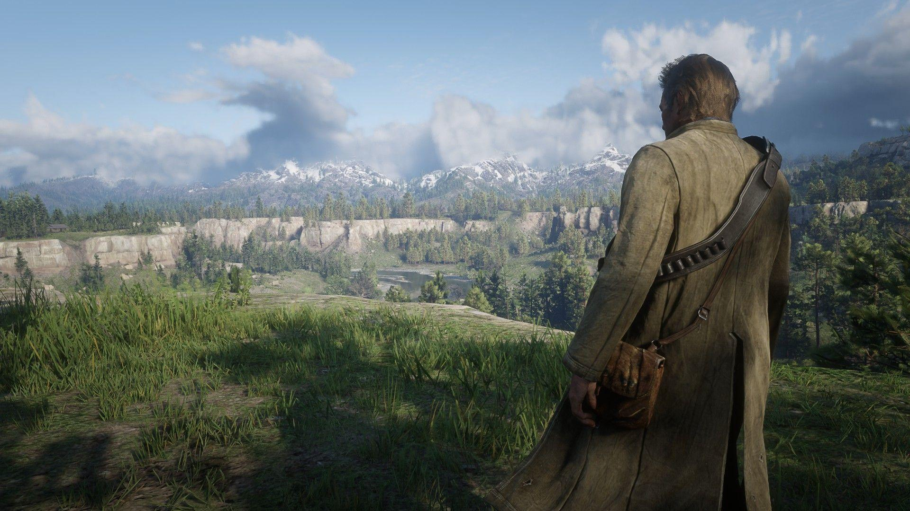

Juegos
NUEVA ACTUALIZACIÓN DE GTA ONLINE: ¡VAMOS A POR LA 5000!
GTA ONLINE
GTA Online estrena un nuevo evento de atracos esta semana. ¡Asalta el Centro Kortz y hazte con el botín!
5 de noviembre de 2026

En esta sección encontrarás las últimas noticias sobre Rockstar Games y sus videojuegos.
Juegos
GTA ONLINE
GTA Online estrena un nuevo evento de atracos esta semana. ¡Asalta el Centro Kortz y hazte con el botín!
5 de noviembre de 2026
Juegos
GTA VI
Rockstar Games apuesta por una distribución íntegramente digital para el que se prevé que sea el producto de entretenimiento más caro de la historia, una decisión que ha hecho saltar las alarmas.
28 de agosto de 2026

Juegos
GTA VI
El título más esperado de la década sigue dando mucho de qué hablar.
24 de septiembre de 2026

Juegos
Rockstar Games
Los responsables de Rockstar aseguran que sus próximos videojuegos no necesitarán tantos años de desarrollo gracias a las nuevas tecnologías y herramientas creadas durante GTA VI.
14 de octubre de 2026

Juegos
Red Dead Redemption
Repasamos los rumores y las posibilidades de que Rockstar vuelva al Salvaje Oeste con una nueva entrega.
5 de noviembre de 2026
